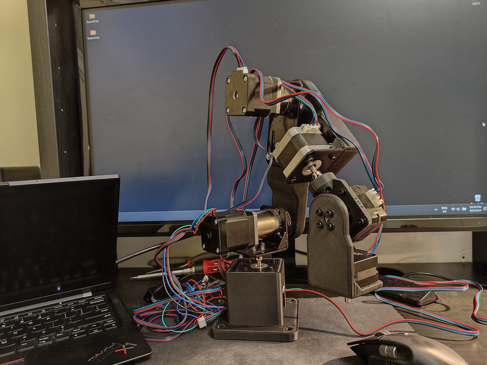
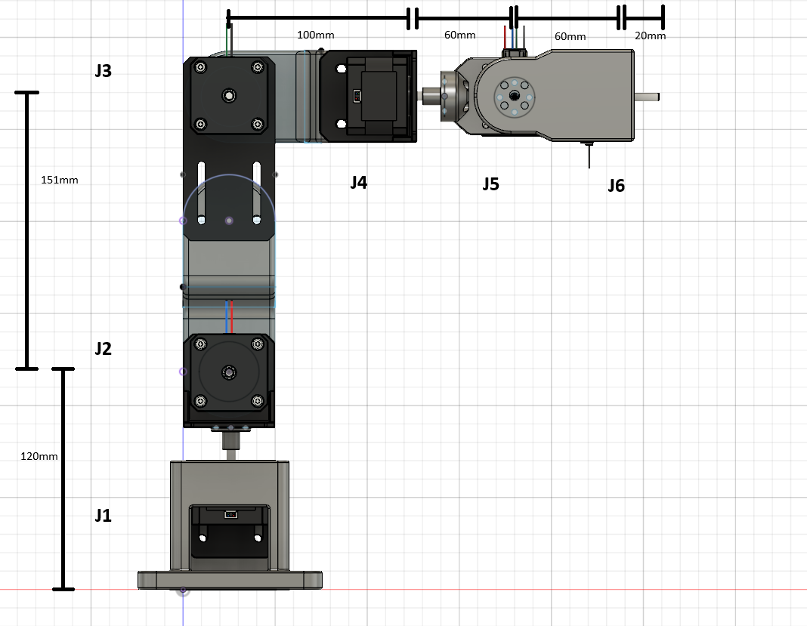
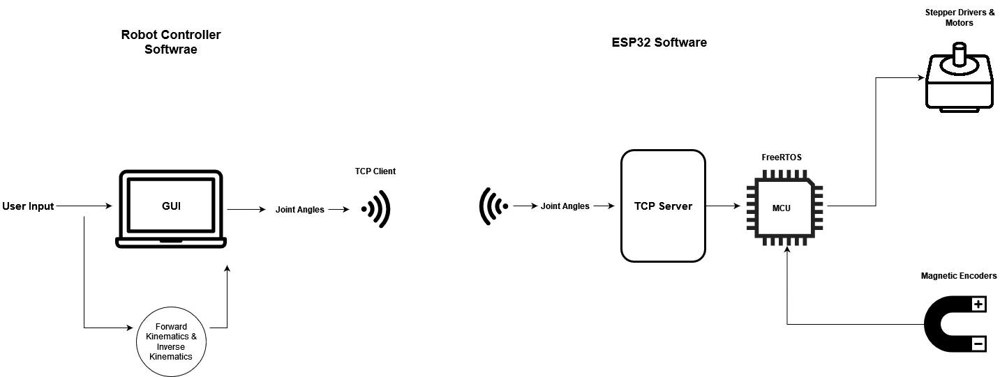
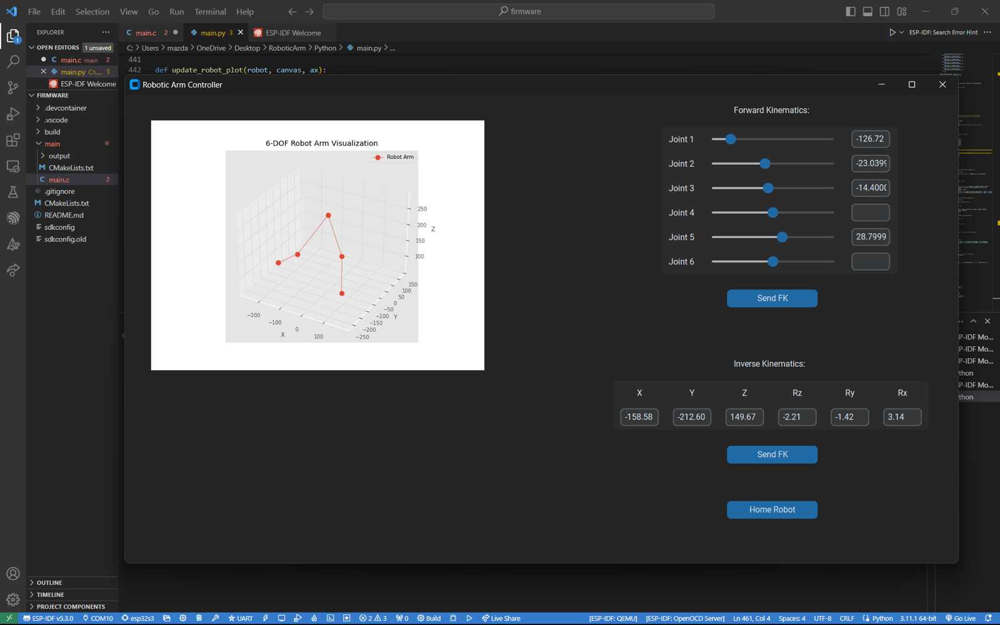

6-Axis Robotic Arm
For this project, I designed and programmed a 6-degree-of-freedom robotic arm. The main goal was to expand my technical skill set and problem-solving abilities, resulting in a diverse range of skills acquired in building a robot from scratch. This included CAD design, 3D printing, mastering matrix transformations for inverse and forward kinematics calculations, writing control software and a Python-based GUI, embedded programming in C, implementing WiFi communication, and developing closed-loop motor control algorithms.

Mechanical
The mechanical design of the arm was centered around three main components:
- Ease of maintenance and upgrades: the arm was built using readily available 3D printer parts, allowing for easy repairability and upgrades.
- Encoder integration: a minimum clearance of 10 mm behind the stepper motors was maintained to accommodate magnetic encoders.
- Spherical wrist for kinematics: the design features a spherical wrist, ensuring that the axes of rotation for the last three joints intersect, which allows for an analytical inverse-kinematic solution using trigonometry.
The design was created in Fusion 360, utilizing standard 3D-printing components such as NEMA 17 stepper motors, aluminum stepper motor mounts, and steel flange couplings to connect the joints to the links. For joints J2 and J3, 50:1 and 5:1 planetary reducers were used, respectively. This setup allowed the robot to achieve a calculated payload of up to 1 kg while maintaining high repeatability. The robot was 3D printed with PETG due to its higher heat resistance and better resistance to bending and impact forces compared to PLA.

| J1 & J4 | 42mm NEMA 17 |
|---|---|
| J5 & J6 | 23mm NEMA 17 |
| J2 | NEMA 17 with 50:1 planetary reducer |
| J3 | NEMA 17 with 5:1 planetary reducer |
| Maximum calculated payload | 1 kg |
| Repeatability | ±2 mm |
Electrical
This robot uses standard stepper motors from 3D printers due to their high torque and low speed, which are ideal for this application. The motors are controlled using TMC2209 silent stepper drivers, with each joint controlled through the STEP and DIR pins on the stepper driver. Each driver was configured to an 8-microstep setting to maximize torque. A 24V 6A power supply powers all six stepper motors, but each motor's current was limited to 1A by the stepper driver to prevent overheating.
For controlling the stepper drivers and communicating with an external computer, the ESP32-S3 was selected due to its excellent documentation, particularly for WiFi and Bluetooth applications. However, when programming the motors, I encountered a limitation with the ESP32, which has only four available timers. This restriction prevented me from sending separate PWM signals with unique frequencies to each stepper driver. To overcome this, I wrote an algorithm that could simultaneously control all six motors by sharing a single timer.
For motor feedback, closed-loop control was implemented on J1, J4, J5, and J6 using AS5600 magnetic encoders and diametrically magnetized magnets, allowing precise control of these joints' positions with 12 bits of resolution. For J2 and J3, due to the difference in rotation between the motor shaft and the reducer, I manually positioned the robot in the home position on startup and used software-based step counters to track the joint positions, similar to most 3D-printer software. Lastly, an I2C multiplexer was used to connect all six magnetic encoders to the ESP32, enabling simultaneous communication and switching between each encoder chip.
| Microcontroller | ESP32-S3 DevKitC-1 |
|---|---|
| Stepper drivers | TMC2209 |
| Position feedback | AS5600 magnetic encoders |
Software
The software for this project is divided into two main components:
- Robot controller software & GUI — written in Python, this component provides a graphical user interface that allows the user full control over each joint's position and the robot's tool-head position. It also features a real-time 3D simulation of the robot and communicates with the ESP32 over WiFi. In the background, the software continuously performs forward and inverse kinematics calculations using matrix operations and trigonometry.
- ESP32 software — the lower-level software on the ESP32 handles two primary tasks simultaneously: it establishes a TCP server on the microcontroller to listen for incoming data from the Python software, then moves the joints to the desired angular positions based on readings from the magnetic encoders.

Robot controller software (Python)
The Python GUI is built using the customTkinter library, providing the user with full control over each of the robot's joints by allowing them to set angles between −180° and 180°. The GUI also includes a homing feature, which returns every joint to 0°, and allows the user to specify the robot's tool-frame position using XYZ coordinates and Euler angles. The tool frame's dimensions and orientation can be customized within the software, making the robot adaptable to various attachments, such as a gripper or camera.
The 3D simulation is created using Matplotlib by plotting the transformation matrices of the robot's joints, which leads to the mathematical computations the software performs for forward and inverse kinematics. The software uses Denavit–Hartenberg (DH) parameters to define each joint's transformation matrix. For forward kinematics, the joint angles specified by the user are used to calculate the product of each joint's transformation matrix using NumPy, resulting in the final frame's matrix — from which the tool frame's coordinates (X, Y, Z) and orientation (Rx, Ry, Rz) can be extracted. This process is repeated every time the 3D simulation is updated to reflect the robot's new position.
For inverse kinematics, due to the robot's spherical wrist, the joint angles can be calculated analytically from a given final position and orientation. First, a transformation matrix for the robot's final frame is created based on user input. Then the calculation works back to the center of the spherical wrist by multiplying it by the inverse of the tool-frame matrix and the J1–J6 matrix. Trigonometry is then used to calculate the joint angles for J1, J2, and J3. Forward kinematics is performed from J1 to J3 and the inverse of the J1–J3 matrix is multiplied by the J1–J6 matrix, obtaining the J4–J6 matrix, from which the joint angles for J4, J5, and J6 can be extracted.
For communication with the ESP32, the Python program acts as a TCP client, using sockets to send a list of joint angles formatted in JSON to the ESP32's TCP server. Once the robot has moved to the new pose, the Python program receives a "status: completed" message from the ESP32, allowing it to resume taking user inputs.

ESP32 software (C)
The ESP32 software utilizes a FreeRTOS task to run a TCP server, allowing it to communicate with the Python program while simultaneously controlling the robot by sending STEP and DIR commands to the six stepper drivers. The server listens for new joint angles from the controller, and once it receives a set of joint angles, it converts the JSON data into six separate joint angles. It then calls a motor control function, which reads the registers from the magnetic encoders. Using this data, along with the step counters for J2 and J3, the function moves all motors simultaneously to their correct angular positions.
Next version
- Experiment with BLDC motors by developing a custom BLDC actuator using ODrive.
- Learn more about computer vision for robotics, by applying object detection to motion planning and obstacle avoidance.